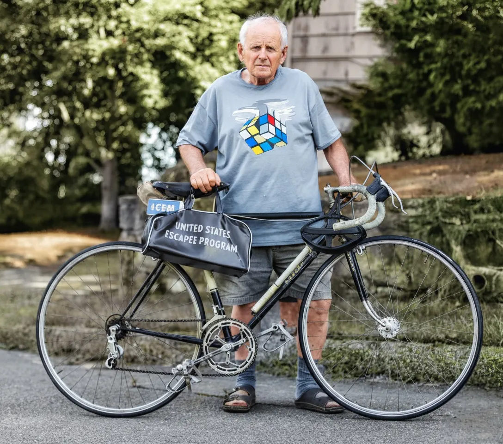
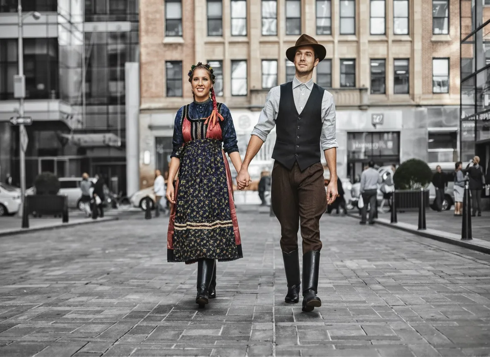
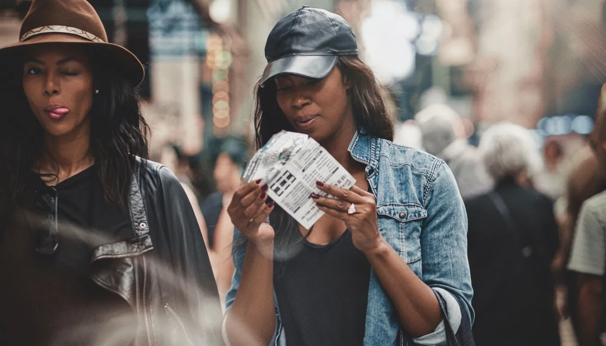
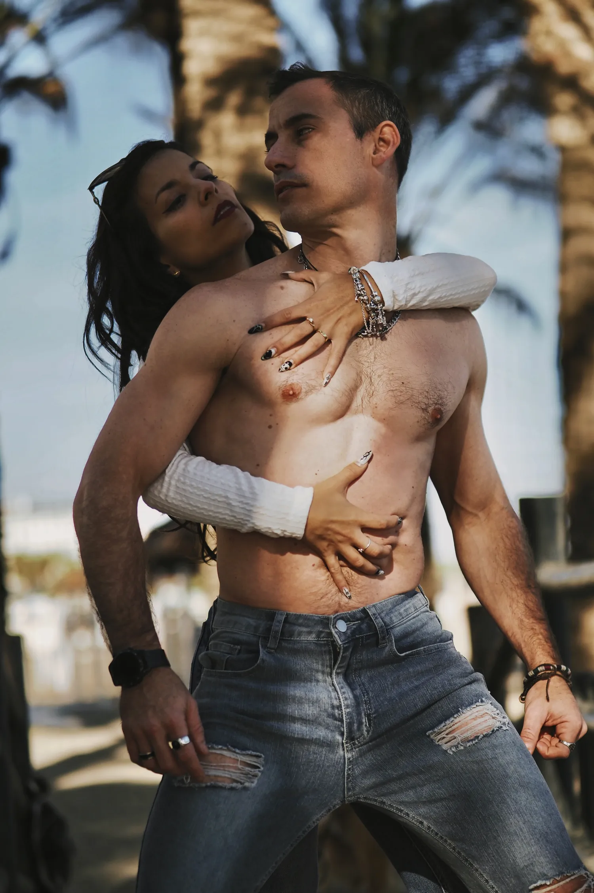
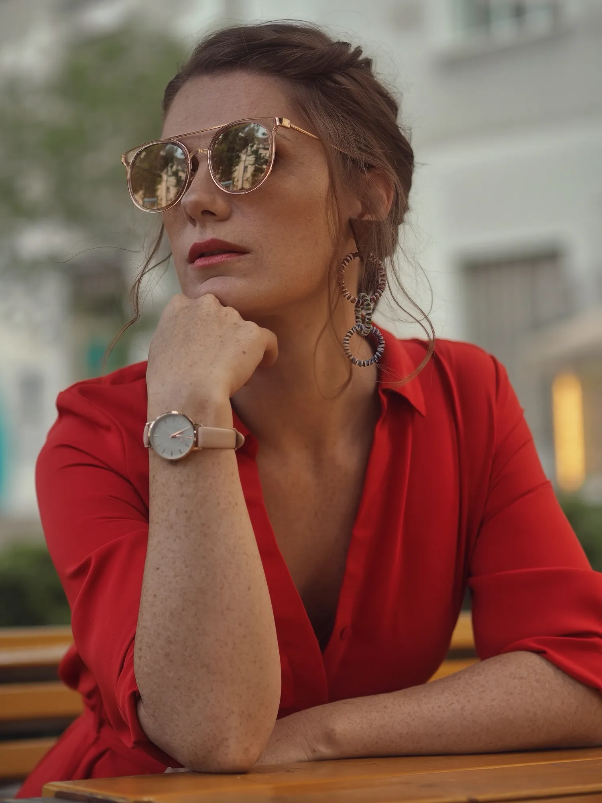
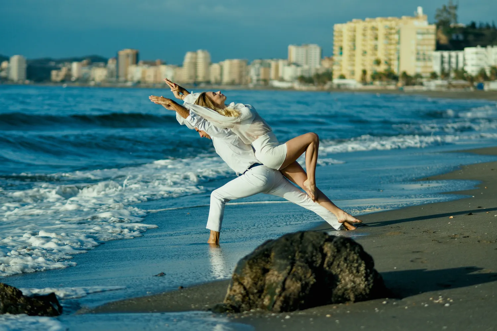
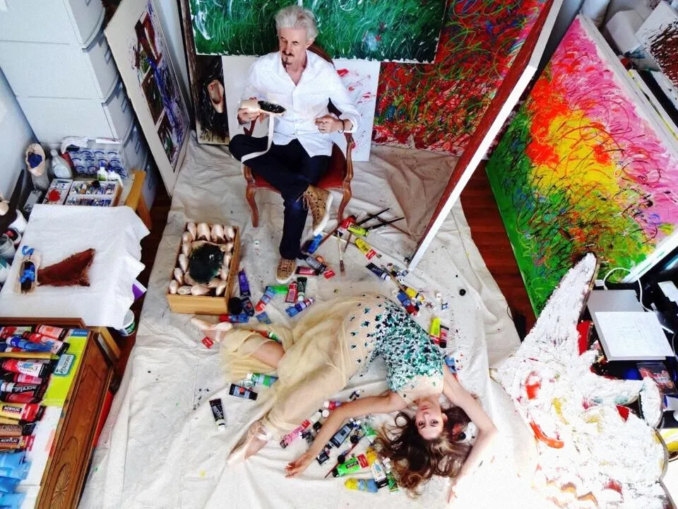
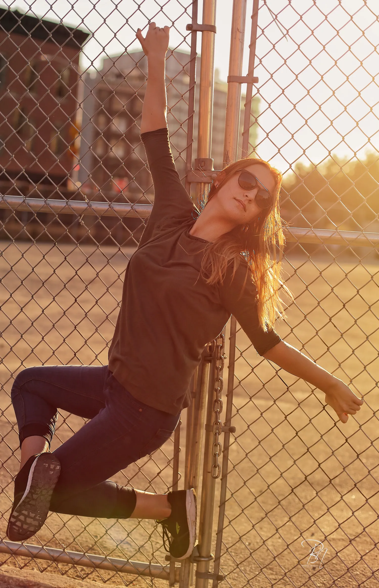
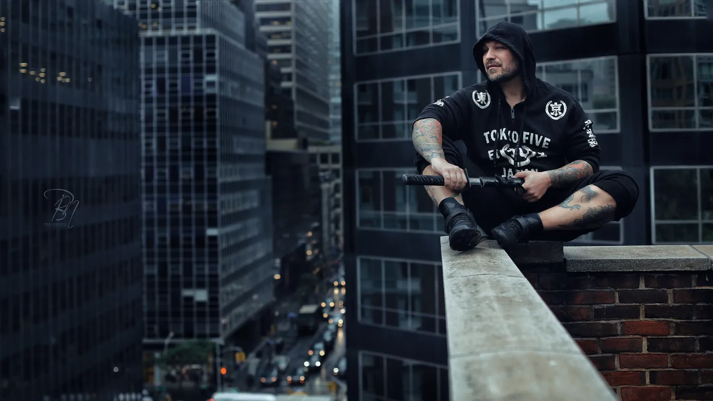
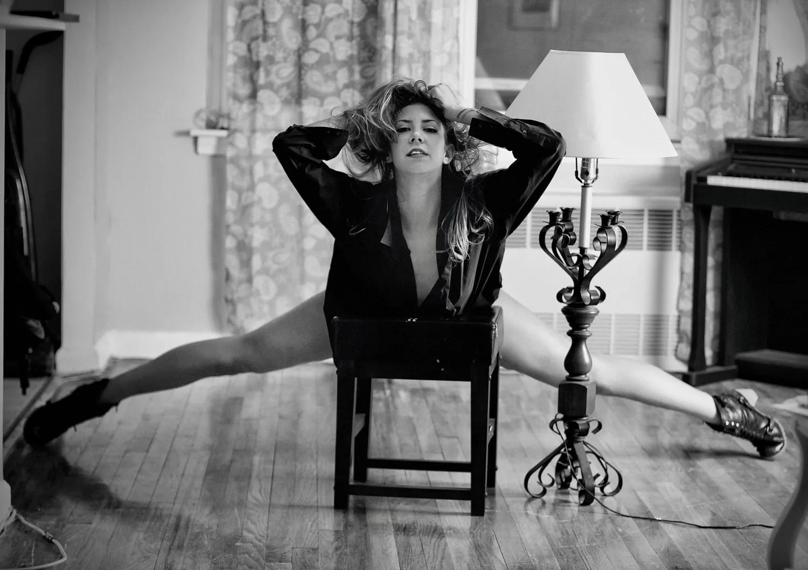

Eine Marke wird durch die Menschen sichtbar, die hinter ihr stehen.
Markenfotografie ist keine Dekoration für eine Website. Sie hilft, ein Unternehmen, eine Gründerpersönlichkeit oder eine Idee verständlicher zu machen.
Ich entwickle visuelle Sprache aus Menschen, Orten, Gesten und Atmosphäre, damit die Bilder auf Website, LinkedIn, in der Presse, in Präsentationen und in langfristiger Kommunikation funktionieren.
Warum Bildstrategie zählt
Ein Unternehmen stellt sich nicht nur durch sein Logo vor. Es wird durch die Menschen sichtbar, die täglich Entscheidungen, Ton und Kultur tragen.
Meine Aufgabe ist es, diese menschliche Ebene sichtbar zu machen, ohne sie zur Inszenierung werden zu lassen. Das Ergebnis soll geschäftlich klar und menschlich erinnerbar sein.
Wie ich eine visuelle Sprache entwickle
Vor dem Fotografieren möchte ich verstehen, was die Bilder erzählen müssen und wo sie eingesetzt werden. Ein Markenprojekt kann Porträts, Umgebungsbilder, Lifestyle-Momente, Details und visuellen Rhythmus umfassen.
Ziel ist nicht Menge, sondern Kohärenz. Jedes Bild soll einen Grund haben, zu existieren.
Wem ich helfen kann
Für Gründer, Berater, Kreative und Organisationen, die keine einzelnen Bilder, sondern eine konsistente visuelle Sprache benötigen.
Was ich für Sie sichtbar mache
Ein Briefing zur visuellen Positionierung, Bildrhythmus, Ort-Strategie, Porträt- und Lifestyle-Material für Web, PR, Employer Branding und langfristige Markenarbeit.
Auch die Erfahrung zählt.
Ich möchte, dass die Bilder nach Ihrem Unternehmen klingen und nicht nach einer geliehenen Bildsprache. Der Prozess macht die Menschen hinter der Marke sichtbar, ohne sie in eine Rolle zu zwingen.
Eine kuratierte Bildauswahl
Brand- und Positionierungsbild von Norbert Banhalmi, das Person, Atmosphäre und Kontext zu einer kohärenten visuellen Identität verbindet.


















